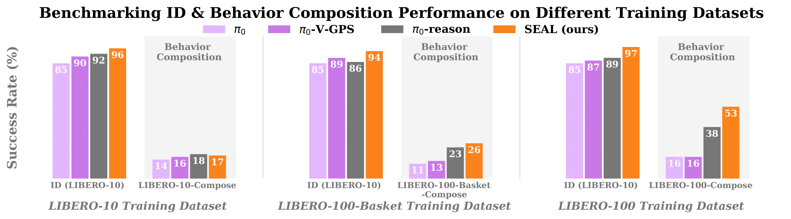
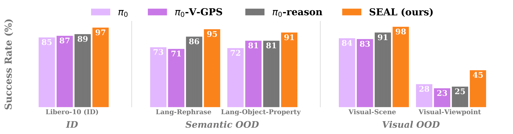

Reasoning Vision Language Action (VLA) models improve robotic instruction-following by generating step-by-step textual plans before low-level actions, an approach inspired by Chain-of-Thought (CoT) reasoning in language models. Yet even with a correct textual plan, the generated actions can still miss the intended outcomes in the plan, especially in out-of-distribution (OOD) scenarios. We formalize this phenomenon as a lack of embodied CoT faithfulness, and introduce a training-free, runtime policy steering method for reasoning-action alignment. Given a reasoning VLA’s intermediate textual plan, our framework samples multiple candidate action sequences from the same model, predicts their outcomes via simulation, and uses a pre-trained Vision-Language Model (VLM) to select the sequence whose outcome best aligns with the VLA’s own textual plan. Only executing action sequences that align with the textual reasoning turns our base VLA’s natural action diversity from a source of error into a strength, boosting robustness to semantic and visual OOD perturbations and enabling novel behavior composition without costly re-training. We also contribute a reasoning-annotated extension of LIBERO-100, environment variations tailored for OOD evaluation, and demonstrate up to 15% performance gain over prior work on behavior composition tasks and scales with compute and data diversity.
Reasoning Vision Language Action (VLA) models interleave textual planning and action generation. After generating a text plan which describes intermediate goals, we sample a batch of action sequences, forward simulate their outcomes until the model switches to think again. We then use a Vision Language model (VLM) verifier to score alignment between the action’s outcomes and the text plan. This improves the embodied CoT faithfulness at runtime by executing only action samples that achieve the outcome of the text plan
With reasoning-action alignment, SEAL (ours) improves performance of reasoning VLAs for in-distribution tasks.
Interactive Visuliazation: Choose from the dropdown list below to visualize SEAL's performance for in-distribution scenarios of each task in LIBERO-10.
In-Distribution :
As shown in the figure above, with reasoning-action alignment, SEAL (ours) obtains even larger performance gains over reasoning VLAs on novel behavior composition tasks compared to ID tasks.
Interactive Visuliazation: Choose from the dropdown list below to visualize SEAL 's policy for novel behavior composition tasks derived from LIBERO-10.
Behavior Composition : combine learned skills for novel tasks
SEAL is more robust to various OOD shifts (including semantic and visual changes) than other baselines
Interactive Visuliazation: Choose from the dropdown list belowto visualize how SEAL performs under various OOD shifts for each task in LIBERO-10.
Semantic OOD (Lang-Rephrase) : rephrase the task instruction but keep the object description the same.
Semantic OOD (Lang-Object-Property) : only change the object description.
Visual OOD (Visual-Scene) : only replace or add the distractor object.
Visual OOD (Visual-Viewpoint) : change the background and the camera pose.